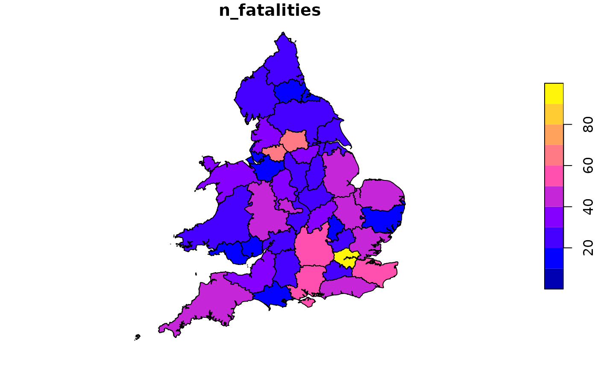
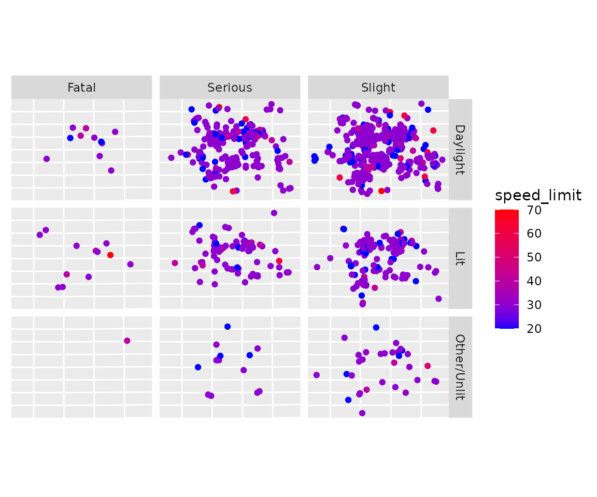
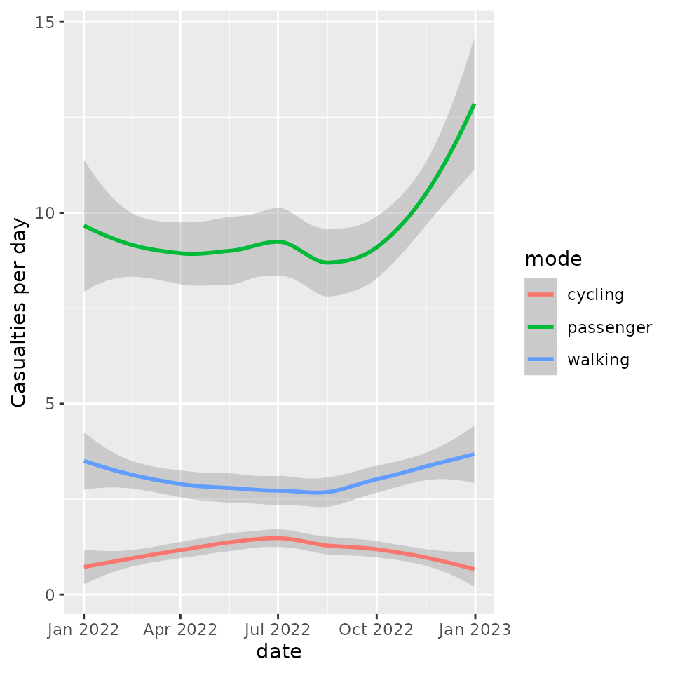
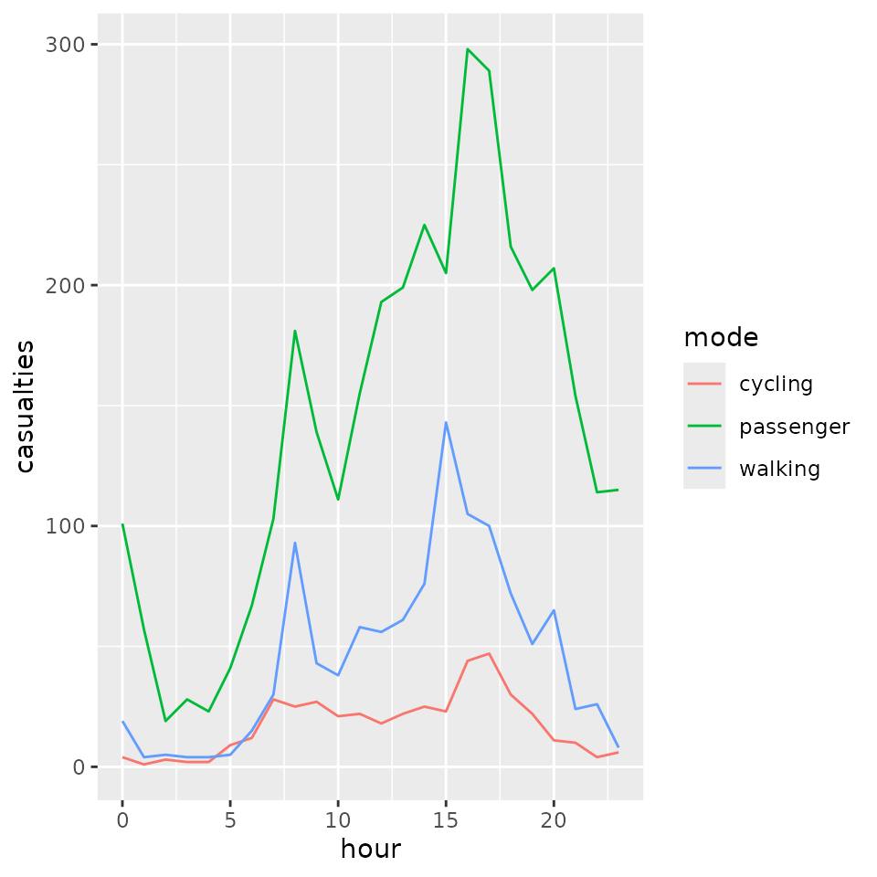

Introducing stats19
R Lovelace, M Morgan, L Hama and M Padgham
2024-03-10
Source:vignettes/stats19.Rmd
stats19.RmdIntroduction
stats19 enables access to and processing of Great Britain’s official road traffic casualty database, STATS19. A description of variables in the database can be found in a document provided by the UK’s Department for Transport (DfT). The datasets are collectively called STATS19 after the form used to report them, which can be found here. This vignette focuses on how to use the stats19 package to work with STATS19 data.
Note: The Department for Transport used to refer to ‘accidents’, but “crashes” may be a more appropriate term, as emphasised in the “crash not accident” arguments of road safety advocacy groups such as RoadPeace. We use the term collision only in reference to nomenclature within the data as provided.
The development version is hosted on GitHub and can be installed and loaded as follows:
# from CRAN
install.packages("stats19")
# you can install the latest development (discoraged) using:
remotes::install_github("ITSLeeds/stats19")Functions
The easiest way to get STATS19 data is with get_stats19(). This function takes 2 main arguments, year and type. The year can be any year between 1979 and 202x where x is the current year minus one or two due to the delay in publishing STATS19 statistics. The type can be one of accidents, casualties and vehicles, described below. get_stats19() performs 3 jobs, corresponding to three main types of functions:
Download: A
dl_stats19()function acceptsyear,typeandfilenamearguments to make it easy to find the right file to download only.-
Read: STATS19 data is provided in a particular format that benefits from being read-in with pre-specified column types. This is taken care of with
read_*()functions providing access to the 3 main tables in STATS19 data:-
read_collisions()reads-in the crash data (which has one row per incident) -
read_casualties()reads-in the casualty data (which has one row per person injured or killed) -
read_vehicles()reads-in the vehicles table, which contains information on the vehicles involved in the crashes (and has one row per vehicle)
-
Format: There are corresponding
format_*()functions for each of theread_*()functions. These have been exported for convenience, as the two sets of functions are closely related, there is also aformatparameter for theread_*()functions, which by default isTRUE, adds labels to the tables. The raw data provided by the DfT contains only integers. Runningread_*(..., format = TRUE)converts these integer values to the corresponding character variables for each of the three tables. For example,read_collisions(format = TRUE)converts values in theaccident_severitycolumn from1,2and3toSlight,SeriousandFatalusingfromat_collisions()function. To read-in raw data without formatting, setformat = FALSE.
Multiple functions (read_* and format_*) are needed for each step because of the structure of STATS19 data, which are divided into 3 tables:
- “accident circumstances, with details about location, severity, weather, etc.;
- casualties, referencing knowledge about the victims; and
- vehicles, which contains more information about the vehicle type and manoeuvres, as well the some information about the driver.”
Data files containing multiple years worth of data can be downloaded. Datasets since 1979 are broadly consistent, meaning that STATS19 data represents a rich historic geographic record of road casualties at a national level.
Download STATS19 data
stats19 enables download of raw STATS19 data with dl_* functions. The following code chunk, for example, downloads and unzips a .zip file containing STATS19 data from 2022:
dl_stats19(year = 2022, type = "collision", ask = FALSE)
#> Files identified: dft-road-casualty-statistics-collision-2022.csv
#> https://data.dft.gov.uk/road-accidents-safety-data/dft-road-casualty-statistics-collision-2022.csv
#> Attempt downloading from: https://data.dft.gov.uk/road-accidents-safety-data/dft-road-casualty-statistics-collision-2022.csv
#> Data saved at /tmp/Rtmpmy5GdG/dft-road-casualty-statistics-collision-2022.csv
#> NULLNote that in the previous command, ask = FALSE, meaning you will not be asked. By default you are asked to confirm, before downloading large files. Currently, these files are downloaded to a default location of tempdir which is a platform independent “safe” but temporary location to download the data in. Once downloaded, they are unzipped under original DfT file names. The dl_stats19() function prints out the location and final file name(s) of unzipped files(s) as shown above.
dl_stats19() takes three parameters. Supplying a file_name is interpreted to mean that the user is aware of what to download and the other two parameters will be ignored. You can also use year and type to “search” through the file names, which are stored in a lazy-loaded dataset called stats19::file_names.
You can find out the names of files that can be downloaded with names(stats19::file_names), an example of which is shown below:
stats19::file_names$DigitalBreathTestData2013.zip
#> NULLTo see how file_names was created, see ?file_names. Data files from other years can be selected interactively. Just providing a year, for example, presents the user with multiple options (from file_names), illustrated below:
dl_stats19(year = 2022)Multiple matches. Which do you want to download?
1: dft-road-casualty-statistics-casualty-2022.csv
2: dft-road-casualty-statistics-vehicle-2022.csv
3: dft-road-casualty-statistics-accident-2022.csv
Selection:
Enter an item from the menu, or 0 to exitWhen R is running interactively, you can select which of the 3 matching files to download: those relating to vehicles, casualties or accidents in 2022.
Read STATS19 data
In a similar approach to the download section before, we can read files downloaded using a data_dir location of the file and the filename to read. The code below will download the dftRoadSafetyData_Accidents_2022.zip file from the DfT servers and read its content. Files are saved by default in tempdir(), but this can be overridden to ensure permanent storage in a user-defined location.
crashes_2022_raw = get_stats19(year = 2022, type = "collision", format = FALSE)
#> Files identified: dft-road-casualty-statistics-collision-2022.csv
#> https://data.dft.gov.uk/road-accidents-safety-data/dft-road-casualty-statistics-collision-2022.csv
#> Data already exists in data_dir, not downloading
#> Reading in:
#> /tmp/Rtmpmy5GdG/dft-road-casualty-statistics-collision-2022.csv
#> Rows: 106004 Columns: 36
#> ── Column specification ────────────────────────────────────────────────────────
#> Delimiter: ","
#> chr (6): accident_index, accident_reference, date, local_authority_ons_dis...
#> dbl (29): accident_year, location_easting_osgr, location_northing_osgr, lon...
#> time (1): time
#>
#> ℹ Use `spec()` to retrieve the full column specification for this data.
#> ℹ Specify the column types or set `show_col_types = FALSE` to quiet this message.stats19 imports data with readr::read_csv() which results in a ‘tibble’ object: a data frame with more user-friendly printing and a few other features.
class(crashes_2022_raw)
#> [1] "spec_tbl_df" "tbl_df" "tbl" "data.frame"
dim(crashes_2022_raw)
#> [1] 106004 36There are three read_*() functions, corresponding to the three different classes of data provided by the DfT: 1. read_collisions() 2. read_casualties() 3. read_vehicles()
In all cases, a default parameter read_*(format = TRUE) returns the data in formatted form, as described above. Data can also be imported in the form directly provided by the DfT by passing format = FALSE, and then subsequently formatted with additional format_*() functions, as described in a final section of this vignette. Each of these read_*() functions is now described in more detail.
Crash data
After raw data files have been downloaded as described in the previous section, they can then be read-in as follows:
crashes_2022_raw = read_collisions(year = 2022, format = FALSE)
#> Reading in:
#> /tmp/Rtmpmy5GdG/dft-road-casualty-statistics-collision-2022.csv
#> Rows: 106004 Columns: 36
#> ── Column specification ────────────────────────────────────────────────────────
#> Delimiter: ","
#> chr (6): accident_index, accident_reference, date, local_authority_ons_dis...
#> dbl (29): accident_year, location_easting_osgr, location_northing_osgr, lon...
#> time (1): time
#>
#> ℹ Use `spec()` to retrieve the full column specification for this data.
#> ℹ Specify the column types or set `show_col_types = FALSE` to quiet this message.
crashes_2022 = format_collisions(crashes_2022_raw)
#> date and time columns present, creating formatted datetime column
nrow(crashes_2022_raw)
#> [1] 106004
ncol(crashes_2022_raw)
#> [1] 36
nrow(crashes_2022)
#> [1] 106004
ncol(crashes_2022)
#> [1] 37What just happened? We read-in data on all road crashes recorded by the police in 2022 across Great Britain. The dataset contains
32 columns (variables) for
129,982 crashes.
This work was done by read_collisions(format = FALSE), which imported the “raw” STATS19 data without cleaning messy column names or re-categorising the outputs. format_collisions() function automates the process of matching column names with variable names and labels in a .xls file provided by the DfT. This means crashes_2022 is much more usable than crashes_2022_raw, as shown below, which shows some key variables in the messy and clean datasets:
crashes_2022_raw[c(7, 18, 23, 25)]
#> # A tibble: 106,004 × 4
#> latitude first_road_class junction_control second_road_number
#> <dbl> <dbl> <dbl> <dbl>
#> 1 51.5 3 4 0
#> 2 51.5 3 2 0
#> 3 51.5 3 4 0
#> 4 51.6 6 -1 -1
#> 5 51.6 3 4 0
#> 6 51.5 3 4 0
#> 7 51.4 6 4 0
#> 8 51.6 3 -1 -1
#> 9 51.5 3 2 0
#> 10 51.6 4 4 0
#> # ℹ 105,994 more rows
crashes_2022[c(7, 18, 23, 25)]
#> # A tibble: 106,004 × 4
#> latitude first_road_class junction_control second_road_number
#> <dbl> <chr> <chr> <chr>
#> 1 51.5 A Give way or uncontrolled first_road_class is C…
#> 2 51.5 A Auto traffic signal first_road_class is C…
#> 3 51.5 A Give way or uncontrolled first_road_class is C…
#> 4 51.6 Unclassified Data missing or out of range Unknown
#> 5 51.6 A Give way or uncontrolled first_road_class is C…
#> 6 51.5 A Give way or uncontrolled first_road_class is C…
#> 7 51.4 Unclassified Give way or uncontrolled first_road_class is C…
#> 8 51.6 A Data missing or out of range Unknown
#> 9 51.5 A Auto traffic signal first_road_class is C…
#> 10 51.6 B Give way or uncontrolled first_road_class is C…
#> # ℹ 105,994 more rowsBy default, format = TRUE, meaning that the two stages of read_collisions(format = FALSE) and format_collisions() yield the same result as read_collisions(format = TRUE). For the full list of columns, run names(crashes_2022).
Note: As indicated above, the term collision is only used as directly provided by the DfT; “crashes” is a more appropriate term, hence we call our resultant datasets crashes_*.
Format STATS19 data
It is also possible to import the “raw” data as provided by the DfT. A .xls file provided by the DfT defines the column names for the datasets provided. The packaged datasets stats19_variables and stats19_schema provide summary information about the contents of this data guide. These contain the full variable names in the guide (stats19_variables) and a complete look up table relating integer values to the .csv files provided by the DfT and their labels (stats19_schema). The first rows of each dataset are shown below:
stats19_variables
#> # A tibble: 98 × 5
#> table variable note column_name type
#> <chr> <chr> <chr> <chr> <chr>
#> 1 Accident accident_index uniqu… accident_i… char…
#> 2 Accident accident_index uniqu… accident_i… char…
#> 3 Accident accident_index uniqu… accident_i… char…
#> 4 Accident accident_reference In ye… accident_r… char…
#> 5 Accident accident_severity NA accident_s… char…
#> 6 Accident accident_year NA accident_y… nume…
#> 7 Accident carriageway_hazards NA carriagewa… char…
#> 8 Accident date NA date char…
#> 9 Accident day_of_week NA day_of_week char…
#> 10 Accident did_police_officer_attend_scene_of_accident NA did_police… char…
#> # ℹ 88 more rows
stats19_schema
#> # A tibble: 914 × 7
#> table variable code label note variable_formatted type
#> <chr> <chr> <chr> <chr> <chr> <chr> <chr>
#> 1 Accident police_force 1 Metropolitan Poli… NA police_force char…
#> 2 Accident police_force 3 Cumbria NA police_force char…
#> 3 Accident police_force 4 Lancashire NA police_force char…
#> 4 Accident police_force 5 Merseyside NA police_force char…
#> 5 Accident police_force 6 Greater Manchester NA police_force char…
#> 6 Accident police_force 7 Cheshire NA police_force char…
#> 7 Accident police_force 10 Northumbria NA police_force char…
#> 8 Accident police_force 11 Durham NA police_force char…
#> 9 Accident police_force 12 North Yorkshire NA police_force char…
#> 10 Accident police_force 13 West Yorkshire NA police_force char…
#> # ℹ 904 more rowsThe code that generated these small datasets can be found in their help pages (accessed with ?stats19_variables and ?stats19_schema respectively). stats19_schema is used internally to automate the process of formatting the downloaded .csv files. Column names are formatted by the function format_column_names(), as illustrated below:
format_column_names(stats19_variables$variable[1:3])
#> [1] "accident_index" "accident_index" "accident_index"Previous approaches to data formatting STATS19 data involved hard-coding results. This more automated approach to data cleaning is more consistent and fail-safe. The three functions: format_collisions(), format_vehicles() and format_casualties() do the data formatting on the respective data frames, as illustrated below:
crashes_2022 = format_collisions(crashes_2022_raw)
#> date and time columns present, creating formatted datetime column
# vehicle data for 2022
dl_stats19(year = 2022, type = "vehicle", ask = FALSE)
#> Files identified: dft-road-casualty-statistics-vehicle-2022.csv
#> https://data.dft.gov.uk/road-accidents-safety-data/dft-road-casualty-statistics-vehicle-2022.csv
#> Attempt downloading from: https://data.dft.gov.uk/road-accidents-safety-data/dft-road-casualty-statistics-vehicle-2022.csv
#> Data saved at /tmp/Rtmpmy5GdG/dft-road-casualty-statistics-vehicle-2022.csv
#> NULL
vehicles_2022_raw = read_vehicles(year = 2022)
#> Rows: 193545 Columns: 28
#> ── Column specification ────────────────────────────────────────────────────────
#> Delimiter: ","
#> chr (4): accident_index, accident_reference, generic_make_model, lsoa_of_dr...
#> dbl (24): accident_year, vehicle_reference, vehicle_type, towing_and_articul...
#>
#> ℹ Use `spec()` to retrieve the full column specification for this data.
#> ℹ Specify the column types or set `show_col_types = FALSE` to quiet this message.
vehicles_2022 = format_vehicles(vehicles_2022_raw)
# casualties data for 2022
dl_stats19(year = 2022, type = "casualty", ask = FALSE)
#> Files identified: dft-road-casualty-statistics-casualty-2022.csv
#>
#> https://data.dft.gov.uk/road-accidents-safety-data/dft-road-casualty-statistics-casualty-2022.csv
#> Attempt downloading from: https://data.dft.gov.uk/road-accidents-safety-data/dft-road-casualty-statistics-casualty-2022.csv
#> Data saved at /tmp/Rtmpmy5GdG/dft-road-casualty-statistics-casualty-2022.csv
#> NULL
casualties_2022 = read_casualties(year = 2022)
#> Rows: 135480 Columns: 19
#> ── Column specification ────────────────────────────────────────────────────────
#> Delimiter: ","
#> chr (3): accident_index, accident_reference, lsoa_of_casualty
#> dbl (16): accident_year, vehicle_reference, casualty_reference, casualty_cla...
#>
#> ℹ Use `spec()` to retrieve the full column specification for this data.
#> ℹ Specify the column types or set `show_col_types = FALSE` to quiet this message.The package automates this two-step read_* and format_* process by defaulting in all cases to data_year = read_*(year, format = TRUE). read_* functions return, by default, formatted data. The two-step process may nevertheless be important for reference to the official nomenclature and values as provided by the DfT.
A summary of the outputs for each of the three tables is shown below.
summarise_stats19 = function(x) {
data.frame(row.names = 1:length(x),
name = substr(names(x), 1, 19),
class = sapply(x, function(v) class(v)[1]),
n_unique = sapply(x, function(v) length(unique(v))),
first_label = sapply(x, function(v) substr(unique(v)[1], 1, 16)),
most_common_value = sapply(x, function(v)
substr(names(sort(table(v), decreasing = TRUE)[1]), 1, 16)[1])
)
}
knitr::kable(summarise_stats19(crashes_2022),
caption = "Summary of formatted crash data.")| name | class | n_unique | first_label | most_common_value |
|---|---|---|---|---|
| accident_index | character | 106004 | 2022010352073 | 2022010352073 |
| accident_year | numeric | 1 | 2022 | 2022 |
| accident_reference | character | 106004 | 010352073 | 010352073 |
| location_easting_os | numeric | 85481 | 525199 | 533653 |
| location_northing_o | numeric | 85711 | 177928 | 180088 |
| longitude | numeric | 103897 | -0.198224 | -3.099017 |
| latitude | numeric | 102680 | 51.486454 | 51.442218 |
| police_force | character | 44 | Metropolitan Pol | Metropolitan Pol |
| accident_severity | character | 3 | Slight | Slight |
| number_of_vehicles | numeric | 14 | 2 | 2 |
| number_of_casualtie | numeric | 16 | 1 | 1 |
| date | Date | 365 | 2022-01-05 | 2022-11-04 |
| day_of_week | character | 7 | Wednesday | Friday |
| time | hms | 1440 | 16:40:00 | 17:00:00 |
| local_authority_dis | character | 1 | NA | NA |
| local_authority_ons | character | 365 | E09000013 | E08000025 |
| local_authority_hig | character | 207 | E09000013 | E10000016 |
| first_road_class | character | 6 | A | A |
| first_road_number | character | 2 | NA | first_road_class |
| road_type | character | 6 | Single carriagew | Single carriagew |
| speed_limit | numeric | 6 | 30 | 30 |
| junction_detail | character | 10 | Crossroads | Not at junction |
| junction_control | character | 6 | Give way or unco | Give way or unco |
| second_road_class | character | 8 | Unclassified | Not at junction |
| second_road_number | character | 3 | first_road_class | first_road_class |
| pedestrian_crossing | character | 5 | None within 50 m | None within 50 m |
| pedestrian_crossing | character | 8 | No physical cros | No physical cros |
| light_conditions | character | 6 | Darkness - light | Daylight |
| weather_conditions | character | 9 | Fine no high win | Fine no high win |
| road_surface_condit | character | 7 | Dry | Dry |
| special_conditions_ | character | 10 | None | None |
| carriageway_hazards | character | 8 | None | None |
| urban_or_rural_area | character | 3 | Urban | Urban |
| did_police_officer_ | character | 3 | Yes | Yes |
| trunk_road_flag | character | 3 | Non-trunk | Non-trunk |
| lsoa_of_accident_lo | character | 26849 | E01001883 | -1 |
| datetime | POSIXct | 79890 | 2022-01-05 16:40 | 2022-07-14 18:00 |
knitr::kable(summarise_stats19(vehicles_2022),
caption = "Summary of formatted vehicles data.")| name | class | n_unique | first_label | most_common_value |
|---|---|---|---|---|
| accident_index | character | 106004 | 2022010352073 | 2022371220504 |
| accident_year | numeric | 1 | 2022 | 2022 |
| accident_reference | character | 106004 | 010352073 | 371220504 |
| vehicle_reference | numeric | 24 | 1 | 1 |
| vehicle_type | character | 1 | NA | NA |
| towing_and_articula | character | 1 | NA | NA |
| vehicle_manoeuvre | character | 1 | NA | NA |
| vehicle_direction_f | character | 1 | NA | NA |
| vehicle_direction_t | character | 1 | NA | NA |
| vehicle_location_re | character | 1 | NA | NA |
| junction_location | character | 1 | NA | NA |
| skidding_and_overtu | character | 1 | NA | NA |
| hit_object_in_carri | character | 1 | NA | NA |
| vehicle_leaving_car | character | 1 | NA | NA |
| hit_object_off_carr | character | 1 | NA | NA |
| first_point_of_impa | character | 1 | NA | NA |
| vehicle_left_hand_d | character | 1 | NA | NA |
| journey_purpose_of_ | character | 1 | NA | NA |
| sex_of_driver | character | 1 | NA | NA |
| age_of_driver | character | 1 | NA | NA |
| age_band_of_driver | character | 1 | NA | NA |
| engine_capacity_cc | character | 1 | NA | NA |
| propulsion_code | character | 1 | NA | NA |
| age_of_vehicle | numeric | 86 | 4 | -1 |
| generic_make_model | character | 1 | NA | NA |
| driver_imd_decile | character | 1 | NA | NA |
| driver_home_area_ty | character | 1 | NA | NA |
| lsoa_of_driver | character | 32838 | E01002687 | -1 |
knitr::kable(summarise_stats19(casualties_2022),
caption = "Summary of formatted casualty data.")| name | class | n_unique | first_label | most_common_value |
|---|---|---|---|---|
| accident_index | character | 106004 | 2022010352073 | 2022010356595 |
| accident_year | numeric | 1 | 2022 | 2022 |
| accident_reference | character | 106004 | 010352073 | 010356595 |
| vehicle_reference | numeric | 17 | 2 | 1 |
| casualty_reference | numeric | 19 | 1 | 1 |
| casualty_class | character | 3 | Driver or rider | Driver or rider |
| sex_of_casualty | character | 4 | Male | Male |
| age_of_casualty | character | 2 | NA | Data missing or |
| age_band_of_casualt | character | 12 | 16 - 20 | 26 - 35 |
| casualty_severity | character | 3 | Slight | Slight |
| pedestrian_location | character | 12 | Not a Pedestrian | Not a Pedestrian |
| pedestrian_movement | character | 11 | Not a Pedestrian | Not a Pedestrian |
| car_passenger | character | 5 | Not car passenge | Not car passenge |
| bus_or_coach_passen | character | 7 | Not a bus or coa | Not a bus or coa |
| pedestrian_road_mai | character | 4 | No / Not applica | No / Not applica |
| casualty_type | character | 23 | Motorcycle 125cc | Car occupant |
| casualty_home_area_ | character | 4 | Urban area | Urban area |
| casualty_imd_decile | character | 11 | Most deprived 10 | More deprived 10 |
| lsoa_of_casualty | character | 31105 | E01001364 | -1 |
For testing and other purposes, a sample from the accidents table is provided in the package. A few columns from the two-row sample is shown below:
| accident_severity | speed_limit | pedestrian_crossing_human_control | light_conditions |
|---|---|---|---|
| Serious | 30 | Control by other authorised person | Daylight |
| Slight | 30 | None within 50 metres | Darkness - no lighting |
| Slight | 30 | None within 50 metres | Daylight |
Casualties data
As with crashes_2022, casualty data for 2022 can be downloaded, read-in and formatted as follows:
dl_stats19(year = 2022, type = "casualty", ask = FALSE)
#> Files identified: dft-road-casualty-statistics-casualty-2022.csv
#> https://data.dft.gov.uk/road-accidents-safety-data/dft-road-casualty-statistics-casualty-2022.csv
#> Data already exists in data_dir, not downloading
casualties_2022 = read_casualties(year = 2022)
#> Rows: 135480 Columns: 19
#> ── Column specification ────────────────────────────────────────────────────────
#> Delimiter: ","
#> chr (3): accident_index, accident_reference, lsoa_of_casualty
#> dbl (16): accident_year, vehicle_reference, casualty_reference, casualty_cla...
#>
#> ℹ Use `spec()` to retrieve the full column specification for this data.
#> ℹ Specify the column types or set `show_col_types = FALSE` to quiet this message.
nrow(casualties_2022)
#> [1] 135480
ncol(casualties_2022)
#> [1] 19The results show that there were
170,993 casualties reported by the police in the STATS19 dataset in 2022, and
16 columns (variables). Values for a sample of these columns are shown below:
casualties_2022[c(4, 5, 6, 14)]
#> # A tibble: 135,480 × 4
#> vehicle_reference casualty_reference casualty_class bus_or_coach_passenger
#> <dbl> <dbl> <chr> <chr>
#> 1 2 1 Driver or rider Not a bus or coach pass…
#> 2 1 1 Driver or rider Not a bus or coach pass…
#> 3 1 1 Driver or rider Not a bus or coach pass…
#> 4 1 1 Driver or rider Not a bus or coach pass…
#> 5 1 2 Passenger Not a bus or coach pass…
#> 6 1 1 Driver or rider Not a bus or coach pass…
#> 7 2 2 Driver or rider Not a bus or coach pass…
#> 8 3 3 Driver or rider Not a bus or coach pass…
#> 9 1 1 Driver or rider Not a bus or coach pass…
#> 10 1 2 Passenger Not a bus or coach pass…
#> # ℹ 135,470 more rowsThe full list of column names in the casualties dataset is:
names(casualties_2022)
#> [1] "accident_index" "accident_year"
#> [3] "accident_reference" "vehicle_reference"
#> [5] "casualty_reference" "casualty_class"
#> [7] "sex_of_casualty" "age_of_casualty"
#> [9] "age_band_of_casualty" "casualty_severity"
#> [11] "pedestrian_location" "pedestrian_movement"
#> [13] "car_passenger" "bus_or_coach_passenger"
#> [15] "pedestrian_road_maintenance_worker" "casualty_type"
#> [17] "casualty_home_area_type" "casualty_imd_decile"
#> [19] "lsoa_of_casualty"Vehicles data
Data for vehicles involved in crashes in 2022 can be downloaded, read-in and formatted as follows:
dl_stats19(year = 2022, type = "vehicle", ask = FALSE)
#> Files identified: dft-road-casualty-statistics-vehicle-2022.csv
#> https://data.dft.gov.uk/road-accidents-safety-data/dft-road-casualty-statistics-vehicle-2022.csv
#> Data already exists in data_dir, not downloading
vehicles_2022 = read_vehicles(year = 2022)
#> Rows: 193545 Columns: 28
#> ── Column specification ────────────────────────────────────────────────────────
#> Delimiter: ","
#> chr (4): accident_index, accident_reference, generic_make_model, lsoa_of_dr...
#> dbl (24): accident_year, vehicle_reference, vehicle_type, towing_and_articul...
#>
#> ℹ Use `spec()` to retrieve the full column specification for this data.
#> ℹ Specify the column types or set `show_col_types = FALSE` to quiet this message.
nrow(vehicles_2022)
#> [1] 193545
ncol(vehicles_2022)
#> [1] 28The results show that there were
238,926 vehicles involved in crashes reported by the police in the STATS19 dataset in 2022, with
23 columns (variables). Values for a sample of these columns are shown below:
vehicles_2022[c(3, 14:16)]
#> # A tibble: 193,545 × 4
#> accident_reference vehicle_leaving_carriageway hit_object_off_carriageway
#> <chr> <chr> <chr>
#> 1 010352073 Did not leave carriageway None
#> 2 010352073 Did not leave carriageway None
#> 3 010352573 Nearside Road sign or traffic signal
#> 4 010352573 Did not leave carriageway None
#> 5 010352575 Did not leave carriageway None
#> 6 010352575 Did not leave carriageway None
#> 7 010352578 Did not leave carriageway None
#> 8 010352578 Did not leave carriageway None
#> 9 010352580 Did not leave carriageway None
#> 10 010352580 Did not leave carriageway None
#> # ℹ 193,535 more rows
#> # ℹ 1 more variable: first_point_of_impact <chr>The full list of column names in the vehicles dataset is:
names(vehicles_2022)
#> [1] "accident_index" "accident_year"
#> [3] "accident_reference" "vehicle_reference"
#> [5] "vehicle_type" "towing_and_articulation"
#> [7] "vehicle_manoeuvre" "vehicle_direction_from"
#> [9] "vehicle_direction_to" "vehicle_location_restricted_lane"
#> [11] "junction_location" "skidding_and_overturning"
#> [13] "hit_object_in_carriageway" "vehicle_leaving_carriageway"
#> [15] "hit_object_off_carriageway" "first_point_of_impact"
#> [17] "vehicle_left_hand_drive" "journey_purpose_of_driver"
#> [19] "sex_of_driver" "age_of_driver"
#> [21] "age_band_of_driver" "engine_capacity_cc"
#> [23] "propulsion_code" "age_of_vehicle"
#> [25] "generic_make_model" "driver_imd_decile"
#> [27] "driver_home_area_type" "lsoa_of_driver"Creating geographic crash data
An important feature of STATS19 data is that the collision table contains geographic coordinates. These are provided at ~10m resolution in the UK’s official coordinate reference system (the Ordnance Survey National Grid, EPSG code 27700). stats19 converts the non-geographic tables created by format_collisions() into the geographic data form of the sf package with the function format_sf() as follows:
crashes_sf = format_sf(crashes_2022)
#> 22 rows removed with no coordinatesThe note arises because NA values are not permitted in sf coordinates, and so rows containing no coordinates are automatically removed. Having the data in a standard geographic form allows various geographic operations to be performed on it. Spatial operations, such as spatial subsetting and spatial aggregation, can be performed, to show the relationship between STATS19 data and other geographic objects, such as roads, schools and administrative zones.
An example of an administrative zone dataset of relevance to STATS19 data is the boundaries of police forces in England, which is provided in the packaged dataset police_boundaries. The following code chunk demonstrates the kind of spatial operations that can be performed on geographic STATS19 data, by counting and plotting the number of fatalities per police force:
library(sf)
#> Linking to GEOS 3.10.2, GDAL 3.4.1, PROJ 8.2.1; sf_use_s2() is TRUE
library(dplyr)
#>
#> Attaching package: 'dplyr'
#> The following objects are masked from 'package:stats':
#>
#> filter, lag
#> The following objects are masked from 'package:base':
#>
#> intersect, setdiff, setequal, union
crashes_sf %>%
filter(accident_severity == "Fatal") %>%
select(n_fatalities = accident_index) %>%
aggregate(by = police_boundaries, FUN = length) %>%
plot()
#> old-style crs object detected; please recreate object with a recent sf::st_crs()
#> old-style crs object detected; please recreate object with a recent sf::st_crs()
#> old-style crs object detected; please recreate object with a recent sf::st_crs()
#> old-style crs object detected; please recreate object with a recent sf::st_crs()
#> old-style crs object detected; please recreate object with a recent sf::st_crs()
#> old-style crs object detected; please recreate object with a recent sf::st_crs()
#> old-style crs object detected; please recreate object with a recent sf::st_crs()
#> old-style crs object detected; please recreate object with a recent sf::st_crs()
#> old-style crs object detected; please recreate object with a recent sf::st_crs()
Of course, one should not draw conclusions from such analyses without care. In this case, denominators are needed to infer anything about road safety in any of the police regions. After suitable denominators have been included, performance metrics such as ‘health risk’ (fatalities per 100,000 people), ‘traffic risk’ (fatalities per billion km, f/bkm) and ‘exposure risk’ (fatalities per million hours, f/mh) can be calculated (Feleke et al. 2018; Elvik et al. 2009).
The following code chunk, for example, returns all crashes within the jurisdiction of West Yorkshire Police:
west_yorkshire =
police_boundaries[police_boundaries$pfa16nm == "West Yorkshire", ]
#> old-style crs object detected; please recreate object with a recent sf::st_crs()
#> old-style crs object detected; please recreate object with a recent sf::st_crs()
crashes_wy = crashes_sf[west_yorkshire, ]
nrow(crashes_sf)
#> [1] 105982
nrow(crashes_wy)
#> [1] 4400This subsetting has selected the
4,371 crashes which occurred in West Yorkshire.
Joining tables
The three main tables we have just read-in can be joined by shared key variables. This is demonstrated in the code chunk below, which subsets all casualties that took place in West Yorkshire, and counts the number of casualties by severity for each crash:
library(tidyr)
library(dplyr)
sel = casualties_2022$accident_index %in% crashes_wy$accident_index
casualties_wy = casualties_2022[sel, ]
cas_types = casualties_wy %>%
select(accident_index, casualty_type) %>%
group_by(accident_index) %>%
summarise(
Total = n(),
walking = sum(casualty_type == "Pedestrian"),
cycling = sum(casualty_type == "Cyclist"),
passenger = sum(casualty_type == "Car occupant")
)
cj = left_join(crashes_wy, cas_types)What just happened? We found the subset of casualties that took place in West Yorkshire with reference to the accident_index variable. Then we used the dplyr function summarise(), to find the number of people who were in a car, cycling, and walking when they were injured. This new casualty dataset is joined onto the crashes_wy dataset. The result is a spatial (sf) data frame of crashes in West Yorkshire, with columns counting how many road users of different types were hurt. The joined data has additional variables:
As a simple spatial plot, we can map all the crashes that have happened in West Yorkshire in 2022, with the colour related to the total number of people hurt in each crash. Placing this plot next to a map of West Yorkshire provides context:
plot(
cj[cj$cycling > 0, "speed_limit", ],
cex = cj$Total[cj$cycling > 0] / 3,
main = "Speed limit (cycling)"
)
plot(
cj[cj$passenger > 0, "speed_limit", ],
cex = cj$Total[cj$passenger > 0] / 3,
main = "Speed limit (passenger)"
)The spatial distribution of crashes in West Yorkshire clearly relates to the region’s geography. Car crashes tend to happen on fast roads, including busy Motorway roads, displayed in yellow above. Cycling is as an urban activity, and the most bike crashes can be found in near Leeds city centre, which has a comparatively high level of cycling (compared with the low baseline of 3%). This can be seen by comparing the previous map with an overview of the area, from an academic paper on the social, spatial and temporal distribution of bike crashes (Lovelace, Roberts, and Kellar 2016):
In addition to the Total number of people hurt/killed, cj contains a column for each type of casualty (cyclist, car occupant, etc.), and a number corresponding to the number of each type hurt in each crash. It also contains the geometry column from crashes_sf. In other words, joins allow the casualties and vehicles tables to be geo-referenced. We can then explore the spatial distribution of different casualty types. The following figure, for example, shows the spatial distribution of pedestrians and car passengers hurt in car crashes across West Yorkshire in 2022:
library(ggplot2)
crashes_types = cj %>%
filter(accident_severity != "Slight") %>%
mutate(type = case_when(
walking > 0 ~ "Walking",
cycling > 0 ~ "Cycling",
passenger > 0 ~ "Passenger",
TRUE ~ "Other"
))
table(crashes_types$speed_limit)
#>
#> 20 30 40 50 60 70
#> 100 848 155 30 75 63
ggplot(crashes_types, aes(size = Total, colour = speed_limit)) +
geom_sf(show.legend = "point", alpha = 0.3) +
facet_grid(vars(type), vars(accident_severity)) +
scale_size(
breaks = c(1:3, 12),
labels = c(1:2, "3+", 12)
) +
scale_color_gradientn(colours = c("blue", "yellow", "red")) +
theme(axis.text = element_blank(), axis.ticks = element_blank())Spatial distribution of serious and fatal crashes in West Yorkshire, for cycling, walking, being a car passenger and other modes of travel. Colour is related to the speed limit where the crash happened (red is faster) and size is proportional to the total number of people hurt in each crash (legend not shown).
It is clear that different types of road users tend to get hurt in different places. Car occupant casualties (labelled ‘passengers’ in the map above), for example, are comparatively common on the outskirts of cities such as Leeds, where speed limits tend to be higher and where there are comparatively higher volumes of motor traffic. Casualties to people on foot tend to happen in the city centres. That is not to say that cities centres are more dangerous per unit distance (typically casualties per billion kilometres, bkm, is the unit used) walked: there is more walking in city centres (you need a denominator to estimate risk).
To drill down further, we can find the spatial distribution of all pedestrian casualties, broken-down by seriousness of casualty, and light conditions. This can be done with tidyvers functions follows:
table(cj$light_conditions)
#>
#> Darkness - lighting unknown Darkness - lights lit
#> 81 1136
#> Darkness - lights unlit Darkness - no lighting
#> 40 117
#> Daylight
#> 3026
cj %>%
filter(walking > 0) %>%
mutate(light = case_when(
light_conditions == "Daylight" ~ "Daylight",
light_conditions == "Darkness - lights lit" ~ "Lit",
TRUE ~ "Other/Unlit"
)) %>%
ggplot(aes(colour = speed_limit)) +
geom_sf() +
facet_grid(vars(light), vars(accident_severity)) +
scale_color_continuous(low = "blue", high = "red") +
theme(axis.text = element_blank(), axis.ticks = element_blank())
Time series analysis
We can also explore seasonal and daily trends in crashes by aggregating crashes by day of the year:
crashes_dates = cj %>%
st_set_geometry(NULL) %>%
group_by(date) %>%
summarise(
walking = sum(walking),
cycling = sum(cycling),
passenger = sum(passenger)
) %>%
gather(mode, casualties, -date)
ggplot(crashes_dates, aes(date, casualties)) +
geom_smooth(aes(colour = mode), method = "loess") +
ylab("Casualties per day")
#> `geom_smooth()` using formula = 'y ~ x'
Different types of crashes also tend to happen at different times of day. This is illustrated in the plot below, which shows the times of day when people who were travelling by different modes were most commonly injured.
library(stringr)
crash_times = cj %>%
st_set_geometry(NULL) %>%
group_by(hour = as.numeric(str_sub(time, 1, 2))) %>%
summarise(
walking = sum(walking),
cycling = sum(cycling),
passenger = sum(passenger)
) %>%
gather(mode, casualties, -hour)
ggplot(crash_times, aes(hour, casualties)) +
geom_line(aes(colour = mode))
Note that bike crashes tend to have distinct morning and afternoon peaks, in-line with previous research (Lovelace, Roberts, and Kellar 2016). A disproportionate number of car crashes appear to happen in the afternoon.
Further work
There is much potential to extend the package beyond downloading, reading and formatting STATS19 data. The greatest potential is to provide functions that will help with analysis of STATS19 data, to help with road safety research. Much academic research has been done using the data, a few examples of which are highlighted below to demonstrate the wide potential for further work.
- Research exploring the effectiveness of road safety policies such as speed limits. An example in this area is this paper on 20 mph zones who found that areas with 20mph speed limits were safer. This raises the question: can the same result be repeated using reproducible methods? Does the finding hold for more recent 20 mph zones? Is the recent finding of the Department for Transport’s (2018) research, that 20 mph zones alone do not reduce crash rates, supported by reproducible analysis? What are the factors that make speed limits more or less effective (see sarkar_street_2018? for example)?
- Research into weather as a contributing factor to road traffic casualties (e.g. Edwards 1998). This raises the question: could matching crash data from the STATS19 data with historic weather data from other R packages help advance knowledge in this area?
- Assessment of crash rates normalised by estimated exposure rates (risk). An example of this type of research by an author of the package found substantial spatial variation in the number of cyclist casualties across West Yorkshire (Lovelace, Roberts, and Kellar 2016). This raises the questions: are similar spatial differences found in other regions? What are the factors leading to relatively high and low rates of different types of crash?
The broader point is that the stats19 package could help road safety research, by making open access data on road crashes more accessible to researchers worldwide. By easing the data download and cleaning stages of research, it could also encourage reproducible analysis in the field.
There is great potential to add value to and gain insight from the data by joining the datasets with open data, for example from the Consumer Data Research Centre (CDRC, which funded this research), OpenStreetMap and the UK’s Ordnance Survey. If you have any suggestions on priorities for these future directions of (hopefully safe) travel, please get in touch on at github.com/ITSLeeds/stats19/issues.